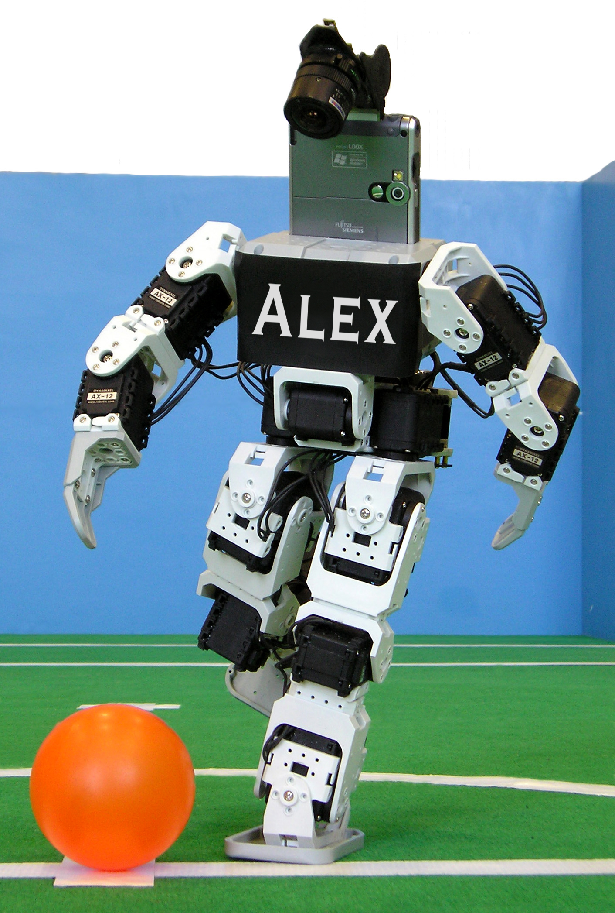

Conhecendo melhor nosso entrevistado(){
Entrevista

Alexsandro possui graduação em Engenharia Elétrica pela Universidade Federal de Uberlândia (1996), mestrado em Ciências da Computação e Matemática Computacional pela Universidade de São Paulo (2001) e doutorado em Engenharia Elétrica pela Universidade Federal de Uberlândia (2007). Atualmente é professor titular da Universidade Federal de Uberlândia. Tem experiência na área de Inteligência Artificial, atuando principalmente nos seguintes temas: computação natural, bioinformática, redes neurais artificiais e computação evolutiva. Confira o currículo completo de Alexsandro Santos Soares.
printf: Prof. Alexsandro, para que nossos leitores possam conhecê-lo melhor, faça um breve histórico sobre sua formação acadêmica (desde o ensino básico).
Alexsandro: Nasci em Vitória, estado do Espírito Santo, e lá estudei em escola pública até a sexta série do primeiro grau. A partir da sétima série até o terceiro colegial eu estudei também em escola pública na cidade de Uberlândia. Ingressei na UFU em 1990 para cursar Engenharia Elétrica. Depois, em 1996, ingressei na Universidade de São Paulo para o mestrado em Ciência da Computação. Em 2003, ingressei novamente na UFU para o doutorado em Engenharia Elétrica.
printf:O que o motivou a fazer pós-graduação? O que o motivou a escolher sua área de pesquisa?
Alexsandro: A pós-graduação foi um caminho natural para mim, pois já desde a graduação eu estava envolvido em pesquisas e fui bolsista em Programa de Iniciação Científica. Assim, a curiosidade e o desejo de aprender mais sobre como os sistemas computacionais realmente funcionam foi o ímpeto inicial para o meu interesse pela pós-graduação. Tenho fascínio pela Inteligência Artificial (IA), área em que atuo desde a graduação, desde a adolescência. O meu primeiro contato com as ideias da IA foram por meio de filmes, normalmente envolvendo robôs inteligentes. Aqui na UFU, tive a oportunidade de trabalhar com alguns dos melhores pesquisadores do país em IA e logo encontrei uma forma de participar de seus laboratórios e de suas pesquisas. Foi como integrantes destes laboratórios que a meu interesse pela IA e pela pesquisa me levaram para o mestrado em IA na Universidade de São Paulo.
printf:O que o motivou a trabalhar com robôs?
Alexsandro: Na realidade eu entrei na engenharia para construir robôs. Depois de entrar, acabei por me interessar mais pela computação e a construção efetiva de robôs ficou um pouco de lado. Entretanto, de uns anos para cá, o estudo da Inteligência Artificial fez retornar o desejo de trabalhar com robôs, principalmente como um veículo para a aplicação de várias ideias que vem chamando a minha atenção nos últimos anos.
printf:Prof. Alexsandro, o sr. orienta alguns alunos em pesquisa sobre robôs. Quais são os temas de suas pesquisas e seus principais objetivos?
Alexsandro: Eu oriento, juntamente com o Prof. Carlos Roberto Lopes, um aluno do Bacharelado em Ciência da Computação, Vinícius Fonseca Maciel e dois do Bacharelado em Sistemas de Informação, Pablo Henrique Penha e Marcos Roberto Moresco. O Pablo e o Vinícius são alunos do PET. As nossas pesquisas visam desenvolver e aplicar técnicas de Inteligência Artificial no desenvolvimento de agentes inteligentes capazes de atuar cooperativamente em ambientes estocásticos e dinâmicos.
}